This user guide describes the features, layout, and operation of the GlideScope application. It is intended to explain how the software functions and how its tools are used. It does not teach Precision Approach Radar (PAR) controlling techniques. Operational procedures, phraseology, and controller technique are covered in the PAR Handbook.
The home screen is the primary control hub for GlideScope. From this screen, you can connect to the network, access configuration and utility tools, and select an approach for which a radar scope will be opened.
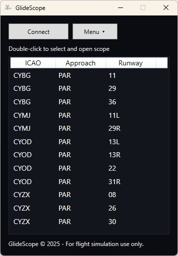To connect to the network, ensure that an active EuroScope connection is established. Once EuroScope is connected, press Connect. When the connection is successful, the main menu will indicate that GlideScope is connected.
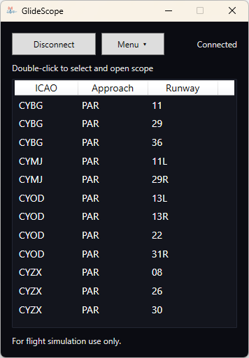To disconnect, select Disconnect in the main menu. If EuroScope disconnects unexpectedly or the user manually disconnects EuroScope, GlideScope will also lose its connection and display a disconnected state.
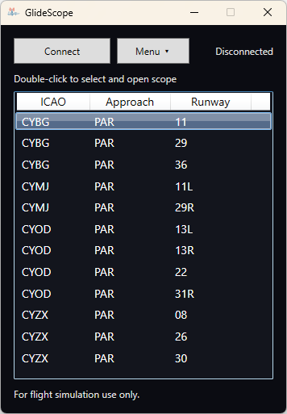If EuroScope is not connected when attempting to connect, or any other error occurs, the main menu will display a failed connection state.
The menu provides access to additional settings and tools. These options change GlideScope behavior and enable features that support either live operation or training.

This menu allows you to select your Push-to-Talk key (PTT). GlideScope uses this input to measure how long it has been since you last transmitted, helping you maintain continuous communications during a PAR. The timer is displayed on the radar screen.
The default PTT is the space bar. To select a new PTT, press Listen, press the desired key or button, then select Save.

The Configure Approaches window allows you to add, edit, or delete approaches. GlideScope ships with default PAR approaches programmed for Canadian airports. The program is not limited to PAR approaches. You can add ILS, RNAV, TACAN, or any custom approach format you want.
Approaches are stored inside /Config/Approaches as .json files.
These can be modified using a standard text editor and shared with others.
If the file is placed in that folder, GlideScope will import it automatically.

To add a new approach, select Add New Approach from the Approaches window. You will be prompted for the following information:
Most of this information is available on approach charts. Charts for most of North America can be found at fltplan.com (account required; not affiliated). For latitude and longitude, you can use Google Maps: right-click on the desired point and copy the displayed coordinates.
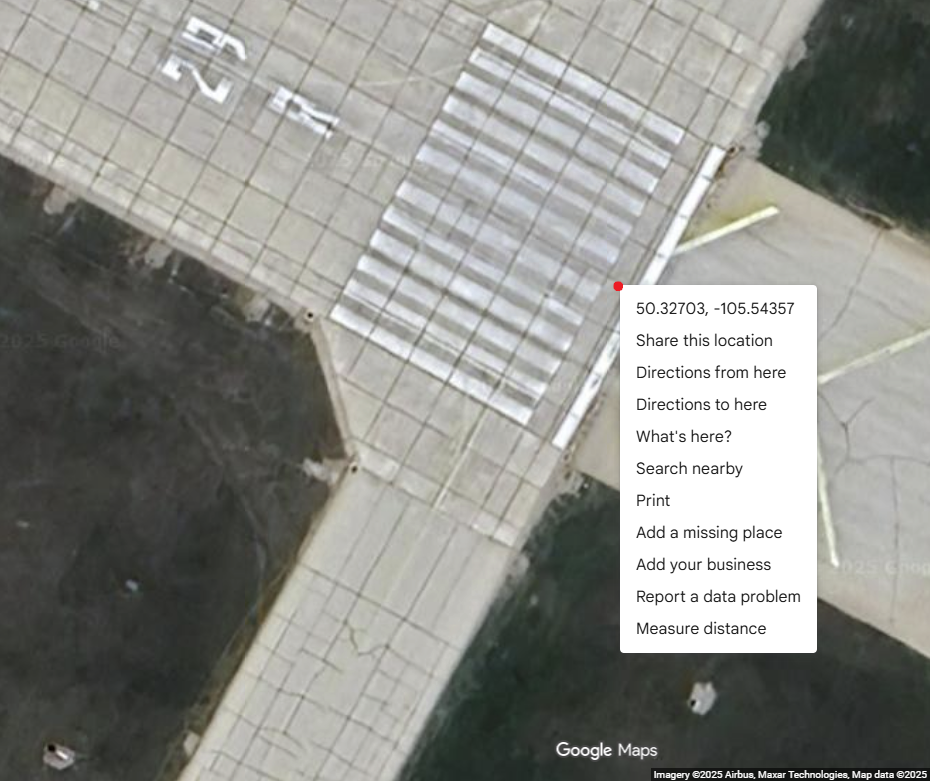PAR approach charts contain most of the required information. For non-PAR approaches, the Ground Point Intercept is effectively how far the touchdown point is from the runway threshold. If it is not published, a value of approximately 1000 feet is usually sufficient for monitoring purposes.
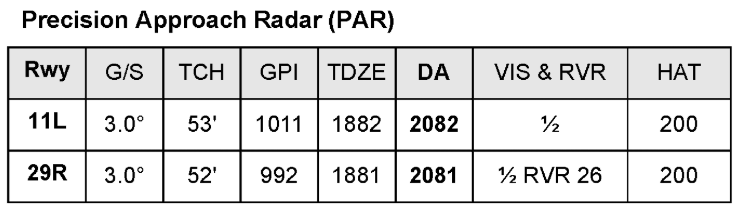To edit an approach, select it from the table and press Edit. This opens the same window used for creation, populated with the selected approach data.

To delete an approach, select it from the list and press Delete.
This removes the corresponding .json file inside Config/Approaches.
The Show Aircraft menu allows you to observe the raw information packets being received for each aircraft that EuroScope displays. It can be filtered by typing in the callsign. This feature is primarily useful for debugging or verifying that traffic updates are being received correctly.
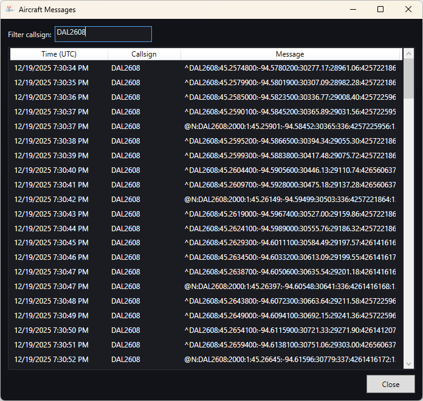This setting forces the radar window to stay above other windows, such as EuroScope. It is especially useful when you need to interact with EuroScope while still keeping the scope visible without constantly alt-tabbing.
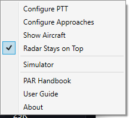The table on the main menu allows you to select which approach to open a radar scope for. To open a scope, select the desired approach and double-click. You may open a scope before establishing a connection with EuroScope.
The live radar is the core of GlideScope. It provides both elevation and azimuth views. When used together, these panes give a practical 3D picture of an aircraft’s position on final approach.
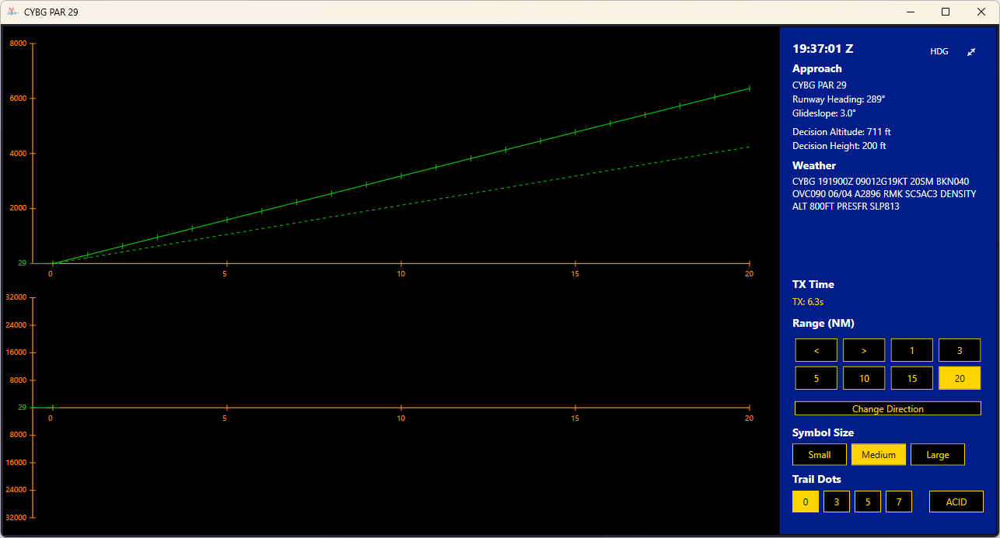If EuroScope is disconnected (or the radar is opened before connecting), the radar will show a red rectangle indicating that it is not receiving live updates. Once EuroScope is connected, the radar resumes updates automatically.
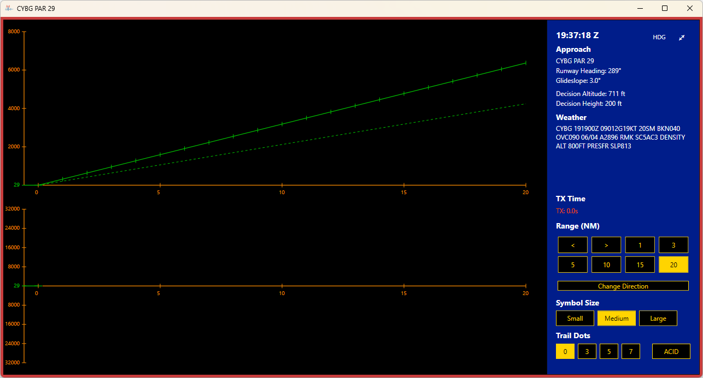The scope consists of two panes: elevation (side view) on top and azimuth (top-down) below. The X axis of both views is in nautical miles. The Y axis shows feet.
In the elevation view, the Y axis represents feet above ground (TDZE). In the azimuth view, the Y axis represents lateral offset in feet.
The elevation pane shows the glidepath as a solid green line with ticks corresponding to distance-to-touchdown. In short ranges (1, 3, and 5), a longer vertical green line marks the point where the glidepath intersects the decision altitude.
A dotted green line represents the lowest safe descent path (one degree below the glidepath angle). If an aircraft descends below this line, it indicates an unsafe profile and the approach must be discontinued.
The green line on the X axis of both views represents the runway. When an aircraft passes over the green line, it is over the runway area. Range selection changes the scale of the axes.
Aircraft targets are shown as white diamonds. Clicking a target toggles a yellow tag that shows information such as groundspeed (kts), distance (NM), and vertical deviation from the glidepath (ft). Clicking again closes the tag.
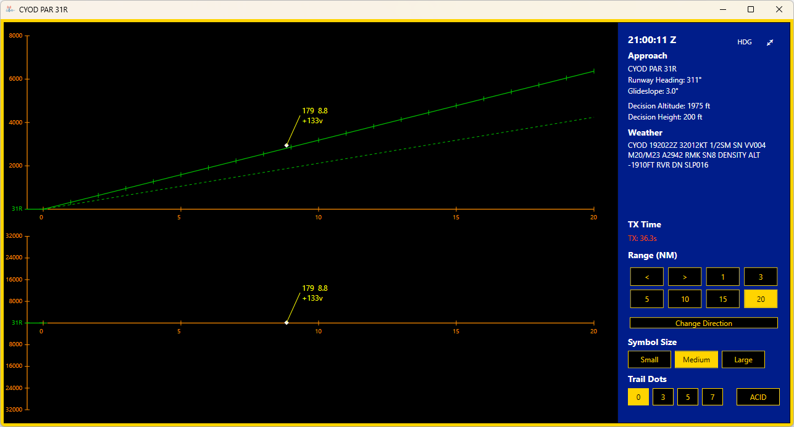The right-side blue panel displays operational reference information. It includes the current time in Zulu, information on the active approach, and the latest METAR available to GlideScope. This panel is intended to reduce the need to cross-reference external sources while running a scope.
TX Time records how long it has been since your PTT was last released. It resets when you transmit again. Between 0 and 5 seconds it is green, between 5 and 10 seconds it is amber, and beyond 10 seconds it is red.
For TX Time to work, the radar window must be in focus so the application can detect the PTT input. If you are alt-tabbed to another application, TX timing may not update.
Range settings change the displayed distance scale. Shorter ranges provide higher precision near touchdown and make fine corrections easier to judge. Longer ranges provide broader situational awareness and are useful for intercept and initial stabilization.
Range can also be adjusted using the left and right arrow keys.
Symbol size adjusts how large the aircraft diamond appears on the scope. This can help with visibility depending on display resolution and personal preference.
Trail dots show a short history of recent positions. They are useful for quickly identifying drift, oscillation, or overcorrection trends, especially when working with strong winds.
The ACID feature allows you to attach a callsign label to an aircraft tag. This is useful when multiple aircraft are visible in the scope area and you want quick visual identification without referencing EuroScope.
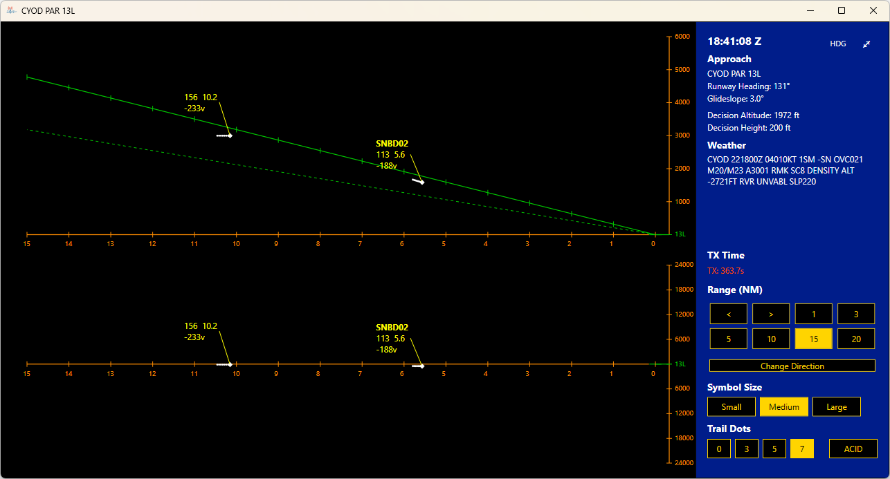To apply an ACID label, click ACID, type the callsign, and click the aircraft symbol you want to label. To clear the label, repeat the same process but leave the text blank before selecting the target.

In the top right corner of the radar are two tools. One toggle enables a fullscreen radar view. The HDG button opens a small draggable heading tool window that stays on top of the radar.
The heading tool is a manual aid that lets you track assigned headings using +1 and -1 buttons. Holding the buttons increases the rate of change. This tool does not read from EuroScope and is not synchronized to aircraft data. It exists purely to help the controller remember the assigned heading.
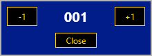Simulator mode allows standalone PAR practice without live traffic. This is useful for learning the GlideScope interface, practicing correction timing, or running training scenarios with a friend acting as the controller.
To set up a simulator exercise, open the menu and select Simulator. In the simulator window, select the desired approach and press Start Simulator. This opens the Simulator Pilot window and a radar display configured for the selected approach.
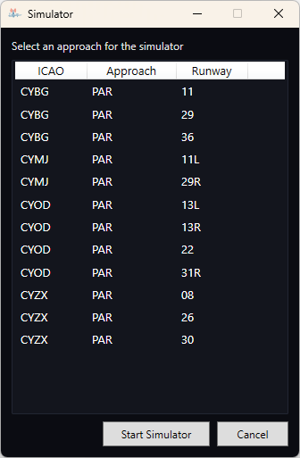When the simulator is running, the radar display is outlined in yellow to clearly indicate that it is not live traffic. Simulated aircraft automatically delete after passing the touchdown point to keep the scope uncluttered.
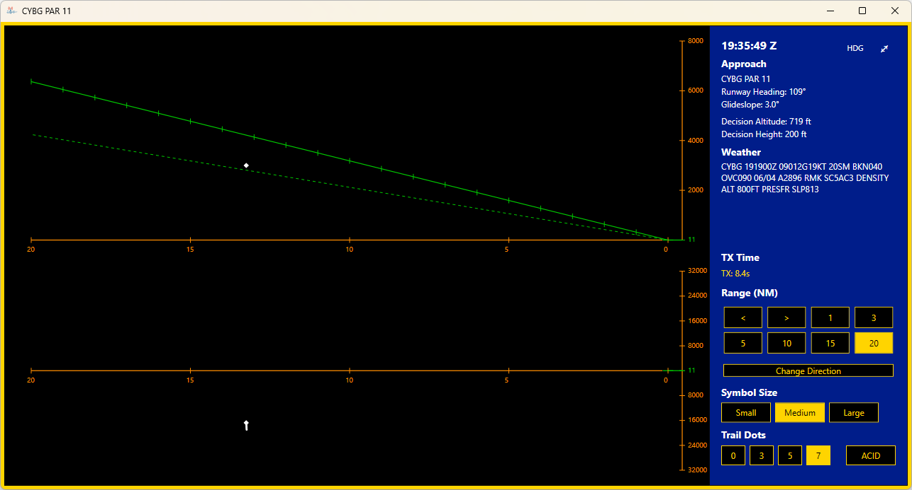 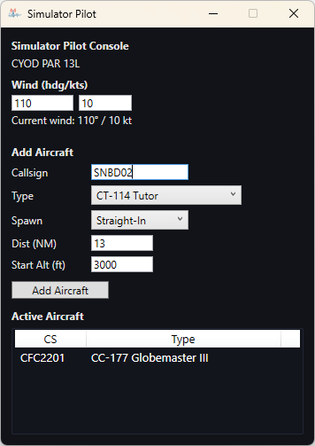The Simulator Pilot window is used to configure wind, create aircraft, and monitor all active simulated traffic. Each aircraft has its own control panel used to issue heading, altitude, and speed commands.
Wind plays a major role in PAR approaches because it drives drift and affects how stable an aircraft appears on final. The simulator allows you to apply wind by entering a wind heading and speed.
Once applied, wind causes the aircraft target to drift in the appropriate direction. This allows you to practice both recognizing drift trends (using trail dots) and issuing timely corrections. Using stronger winds is an effective way to stress-test correction discipline and avoid overcontrolling.
To add an aircraft, enter a callsign and select a type from the drop-down list. Aircraft type affects speed behavior through different phases of flight. This lets the simulator produce more realistic closure rates and timing compared to a fixed-speed target.
Select a spawn side (Right Base, Left Base, or Straight-In) to control the starting geometry. Set the starting distance (4-20 NM) and altitude (500-8000 ft). These limits exist to keep aircraft spawning in a realistic and usable envelope for PAR monitoring and intercept practice.
When complete, select Add Aircraft. The aircraft will spawn and a control panel will open automatically. You can create multiple aircraft to practice sequencing, distraction management, and consistent correction timing.
The Active Aircraft list shows every aircraft currently under simulator control. This list is your “traffic strip” inside the simulator and is the quickest way to confirm what aircraft exist and which are active.
If you close a control panel, the aircraft remains active. Double-click the aircraft in the list to open a new control panel. This is useful when managing multiple aircraft and you want to temporarily declutter your workspace.
When you add an aircraft, its control panel opens automatically. The control panel is divided into sections that mirror basic ATC instructions: heading, altitude, and speed.
All simulator commands are subject to a brief but variable processing delay. This is intentional and represents the difference between issuing an instruction and seeing a real pilot comply. If you issue rapid sequences of corrections, you may “fight the delay” and create oscillations. For training realism, issue corrections with enough time for the aircraft to respond before issuing another.
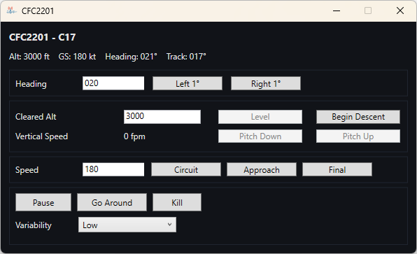The information panel shows the aircraft’s current altitude, ground speed, heading, and track.
Track is especially useful when the simulator operator is acting as a pseudo-pilot for an aircraft on final. It provides a precise alignment reference and can be used to “cheat” into the runway heading for setup, allowing the operator to set and forget while the controller practices correction technique.
This panel controls heading either through incremental buttons or direct entry. Incremental buttons are useful for fine control near final, while direct entry is faster for larger vectors.
Simulated aircraft turn using standard-rate behavior for larger turns. However, 1-2 degree adjustments occur more slowly to mimic the real-world feel of fine corrections on final. This prevents unrealistic snapping and makes the simulator behave more like a real aircraft that “settles” onto a heading.
The altitude panel controls climb and descent behavior. Entering a cleared altitude commands the aircraft to climb or descend at a standard rate until reaching that value, then level off automatically.
The Level button accounts for current vertical trend and commands the aircraft to level appropriately. This button is locked unless the aircraft is currently climbing or descending.
The Begin Descent button is unlocked when the aircraft is level. It sets an initial descent rate and clears the aircraft to 0 feet for a continuous descent profile. Once descent is established, Pitch Up and Pitch Down modify the vertical rate to simulate fine glidepath control.
The speed panel adjusts aircraft speed using presets or manual entry. By default, simulated aircraft begin at circuit speed, slow to approach speed upon intercepting the final approach course, and slow further to final speed at approximately 3 miles.
Entering a speed manually overrides the automatic slowdown logic. This is useful for custom training scenarios, but it also means the aircraft will no longer follow the standard speed profile. To re-enable the automatic profile, select any preset speed again.
The Misc section provides additional aircraft controls:
Variability adds realism by reducing how precisely the aircraft follows commands. There are three settings: none, low, and high. At none, the aircraft tracks instructions exactly. At low and high, the aircraft will show increasing deviation in heading hold, speed stability, and vertical rate, creating a more realistic “imperfect pilot/aircraft” training environment.
For any support requests, please email Dylan Oakes at d.oakes@vatcan.ca or contact on Discord at dylanoakes.